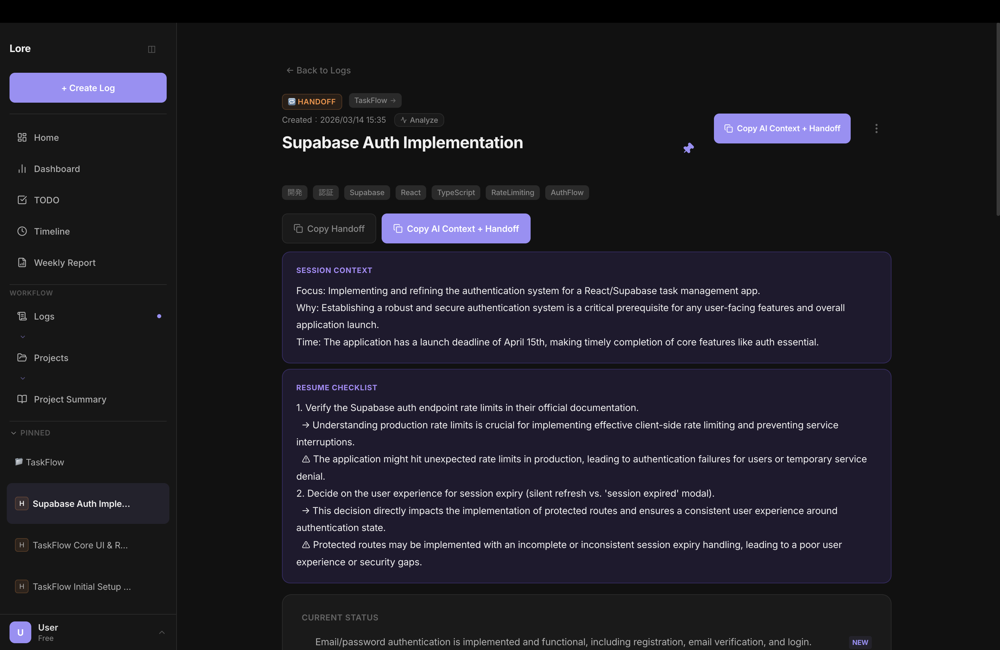

Paste any AI conversation. Lore turns it into a structured project snapshot — current status, key decisions, next actions, and risks — so you and your AI always know exactly where things stand.

This is how your workflow changes.
No forms to fill. No tags to assign. No boards to configure.
From one paste, Lore builds a complete project snapshot.
Anyone running ongoing projects with AI.
I run multiple projects with AI. The problem was never that AI forgets — it's that every new session has zero idea what's been decided, what's in progress, or what's next. So I built something that gives every session a structured briefing. Now I paste my chat, and my project's current state is always clear.
No signup required. No API key needed to try.